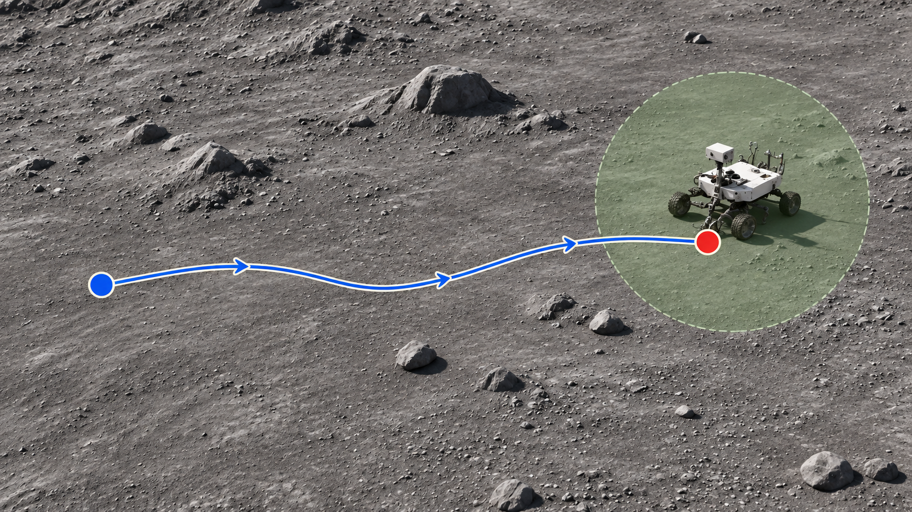

The Mars scenes combine USGS terrain with procedural objects and surface detail. Lowering the Sun from 35° to 8° changes the shadows around the same targets.


VISUAL GROUNDING / SEMANTIC STOPPING
Visual intelligence,
in simulated space.
A controlled evaluation of how visual language models recognize a target and decide when to stop. Across Mars, the Moon, and spacecraft interiors.
Mars A, Jezero terrain. The target is the blue container.
Each clip follows one complete route from the dataset. See the environments and paired lighting.
Space VLA Benchmark studies visual grounding and semantic stopping in simulated space environments. Given a camera image and a short target description, a visual language model answers whether the target is visible. A stopping controller uses those answers to decide where to stop along a predefined route. The evaluation measures both recognition and whether the resulting stop is close enough to the target.
The benchmark includes Mars, Moon and spacecraft-interior scenes. Every route is captured under two lighting conditions, while the target, camera, route and data split stay fixed. This paired design makes it possible to compare how illumination changes model judgments and stopping outcomes without changing the task itself.
Qwen2.5-VL-3B, Lance_3B and Nova Lite 1.0 are evaluated with the same protocol. Isaac Sim renders the observations and follows the scripted trajectory; the models act as visual judges rather than route planners. Saved answers are then replayed under four stopping rules, allowing the effect of visual confirmation to be compared with waiting or simply completing the route.
Each route is captured under two lighting conditions. The pairs below show the same camera view in Mars, Moon and Cabin scenes.
The Mars scenes combine USGS terrain with procedural objects and surface detail. Lowering the Sun from 35° to 8° changes the shadows around the same targets.
The lunar scenes use LOLA-derived terrain with synthetic additions. Scenes A and B change the Sun’s direction. The Moon C pair shown here compares a shadowed scene with the Sun switched on for a controlled experiment; it does not represent natural illumination of a permanently shadowed region.

The cabin scenes place experimental targets inside ISS interior geometry. For the dim-light capture, light intensity is reduced from 60,000 to 12,000; the target layout, route and camera stay fixed.


There are 900 unique routes across nine scenes. Each route has a baseline-light capture and a second-light capture, giving 65,600 frames in total. The paired captures use the same route IDs, targets, cameras and dev/test assignment.
Each scene contains 20 dev routes and 80 test routes; across a world, that is 60 dev and 240 test routes. Dev is used to select the shared stopping parameters, and test is used for the reported comparison. The second lighting condition reuses the frozen parameters.
| World | Scenes | Routes | dev | test | Frames |
|---|---|---|---|---|---|
| Mars | 3 | 300 | 60 | 240 | 9,879 |
| Moon | 3 | 300 | 60 | 240 | 10,821 |
| Cabin | 3 | 300 | 60 | 240 | 12,100 |
| Total | 9 | 900 | 180 | 720 | 32,800 |
Three Judgers × 720 unique test routes = 2,160 model–route pairs per lighting.
Each data group includes 1920 × 1080 RGB PNGs, semantic integer IDs and label maps, binary target masks (0/255), and route records linking camera poses, actions and files. Frozen dev/test splits and evaluation truth for visibility and distance are included. Truth annotations are for scoring and are not model inputs.
Dataset specification and file layoutThe evaluation separates image-based judgment from stop control and scoring. Each model receives the current RGB image and target phrase; its recorded answers are replayed under the stopping rules below. Independent simulator truth is used only to evaluate the outcome.

Concept illustration · rover shown as the target · not to scale
The controller chooses where to stop along the fixed route. A stop succeeds only when its distance to the target is less than the success radius R.
Seeing the target is not enough; the final distance determines success.
Fixed trajectories · paired lighting
Motion shows data flow; it does not represent inference speed or model outputs.
The Judger sees only current RGB + the target phrase. No poses, masks, distance, visibility labels or previous answers enter the model.
An illustrative answer sequence makes the difference between repeated confirmation and waiting explicit.
| Rule / action step | 00 | 03 | 06 | 09 | 12 | 15 | 18 |
|---|---|---|---|---|---|---|---|
| TRACEThree consecutive Yes → stop at step 12 | Yes | No | Yes | Yes | Yes | — | — |
| delay-onlyFirst Yes at 0 + (3−1)×3 → stop at 6 | Yes | · | STOP | — | — | — | — |
| Script endpointFollow the route to its native STOP at 18 | · | · | · | · | · | · | STOP |
Native STOP takes priority in every rule. Replay uses saved answers; changing K/q does not require another model call.
K is the number of consecutive Yes answers required by TRACE; q is the query interval in action steps. For each world, baseline dev results from all three models are weighted equally to choose a single setting.
Selection: K ∈ {2,3}, q ∈ {1,2,3}; rank by mean SR, then mean SPL, then fewer queries. Exact ties use smaller K, then q. Both lightings use the same freeze.
Visibility truth requires ≥400 target pixels; Moon also requires target luminance ≥10. A visibility Oracle is not a guaranteed upper bound on distance-based success.
Each model is evaluated on 240 test routes per world under both lighting conditions. The main comparison uses the K/q setting selected on dev and held fixed across the three models and the two lighting conditions.
TRACE SR (%) · same routes and frozen K/q · n = 240 per group
TRACE has a lower success rate than delay-only in all nine baseline-light groups and eight of the nine second-light groups. In this experiment, requiring repeated visual confirmation does not consistently improve stopping success over waiting after the first positive answer.
The lighting differences are descriptive paired comparisons, not evidence of statistical significance. The 2,160 model–route pairs share 720 test routes and should not be interpreted as 2,160 independent routes.
| World | Judger | Baseline SR | Second-light SR | Δ (pp) |
|---|---|---|---|---|
| Mars | Qwen2.5-VL-3B | 89/240 · 37.08% | 79/240 · 32.92% | -4.17 |
| Mars | Lance_3B | 130/240 · 54.17% | 133/240 · 55.42% | +1.25 |
| Mars | Nova Lite 1.0 | 85/240 · 35.42% | 97/240 · 40.42% | +5.00 |
| Moon | Qwen2.5-VL-3B | 67/240 · 27.92% | 53/240 · 22.08% | -5.83 |
| Moon | Lance_3B | 73/240 · 30.42% | 63/240 · 26.25% | -4.17 |
| Moon | Nova Lite 1.0 | 53/240 · 22.08% | 45/240 · 18.75% | -3.33 |
| Cabin | Qwen2.5-VL-3B | 69/240 · 28.75% | 52/240 · 21.67% | -7.08 |
| Cabin | Lance_3B | 68/240 · 28.33% | 37/240 · 15.42% | -12.92 |
| Cabin | Nova Lite 1.0 | 99/240 · 41.25% | 95/240 · 39.58% | -1.67 |
SR and SPL use the same test routes. The script-endpoint Baseline does not use K/q.
| World | Judger | Baseline SR | Second SR | Δ pp | Baseline SPL | Second SPL |
|---|
Each panel reports TRACE SR (%) over 240 routes. Rows: K; columns: q. Gold outlines mark the dev-frozen setting, not a test-selected optimum.
| K / q | 1 | 2 | 3 |
|---|---|---|---|
| 1 | 0.4% | 0.4% | 2.1% |
| 2 | 1.7% | 5.4% | 16.2% |
| 3 | 6.2% | 22.5% | 37.1 percent; dev-frozen |
| K / q | 1 | 2 | 3 |
|---|---|---|---|
| 1 | 3.3% | 2.5% | 5.0% |
| 2 | 4.2% | 11.2% | 27.1% |
| 3 | 10.0% | 37.9% | 54.2 percent; dev-frozen |
| K / q | 1 | 2 | 3 |
|---|---|---|---|
| 1 | 2.9% | 4.2% | 5.8% |
| 2 | 5.0% | 6.7% | 15.8% |
| 3 | 8.8% | 19.6% | 35.4 percent; dev-frozen |
| K / q | 1 | 2 | 3 |
|---|---|---|---|
| 1 | 28.8% | 29.6% | 27.5% |
| 2 | 29.6% | 30.0% | 27.9 percent; dev-frozen |
| 3 | 30.8% | 26.7% | 22.9% |
| K / q | 1 | 2 | 3 |
|---|---|---|---|
| 1 | 29.6% | 30.8% | 31.2% |
| 2 | 32.9% | 35.0% | 30.4 percent; dev-frozen |
| 3 | 36.2% | 32.5% | 17.5% |
| K / q | 1 | 2 | 3 |
|---|---|---|---|
| 1 | 15.8% | 19.6% | 19.6% |
| 2 | 23.3% | 24.6% | 22.1 percent; dev-frozen |
| 3 | 25.8% | 20.4% | 22.5% |
| K / q | 1 | 2 | 3 |
|---|---|---|---|
| 1 | 1.2% | 2.9% | 5.8% |
| 2 | 6.7% | 12.9% | 14.6% |
| 3 | 12.1% | 17.5% | 28.8 percent; dev-frozen |
| K / q | 1 | 2 | 3 |
|---|---|---|---|
| 1 | 10.4% | 15.4% | 18.8% |
| 2 | 23.8% | 23.8% | 23.3% |
| 3 | 24.2% | 20.8% | 28.3 percent; dev-frozen |
| K / q | 1 | 2 | 3 |
|---|---|---|---|
| 1 | 0.8% | 2.1% | 2.5% |
| 2 | 3.8% | 7.1% | 12.9% |
| 3 | 5.8% | 19.6% | 41.2 percent; dev-frozen |
| K / q | 1 | 2 | 3 |
|---|---|---|---|
| 1 | 0.0% | 1.2% | 6.2% |
| 2 | 2.9% | 13.3% | 18.8% |
| 3 | 10.0% | 23.8% | 32.9 percent; dev-frozen |
| K / q | 1 | 2 | 3 |
|---|---|---|---|
| 1 | 3.3% | 4.6% | 7.9% |
| 2 | 6.2% | 17.9% | 31.2% |
| 3 | 13.8% | 44.2% | 55.4 percent; dev-frozen |
| K / q | 1 | 2 | 3 |
|---|---|---|---|
| 1 | 2.9% | 2.1% | 5.0% |
| 2 | 3.8% | 5.8% | 16.7% |
| 3 | 5.4% | 23.8% | 40.4 percent; dev-frozen |
| K / q | 1 | 2 | 3 |
|---|---|---|---|
| 1 | 24.6% | 25.4% | 31.2% |
| 2 | 30.0% | 30.0% | 22.1 percent; dev-frozen |
| 3 | 30.0% | 20.0% | 19.6% |
| K / q | 1 | 2 | 3 |
|---|---|---|---|
| 1 | 25.4% | 28.3% | 29.6% |
| 2 | 35.0% | 32.1% | 26.2 percent; dev-frozen |
| 3 | 35.0% | 26.7% | 20.8% |
| K / q | 1 | 2 | 3 |
|---|---|---|---|
| 1 | 11.7% | 13.3% | 14.2% |
| 2 | 16.2% | 15.8% | 18.8 percent; dev-frozen |
| 3 | 15.4% | 21.2% | 25.0% |
| K / q | 1 | 2 | 3 |
|---|---|---|---|
| 1 | 10.8% | 12.1% | 14.2% |
| 2 | 12.1% | 15.8% | 13.3% |
| 3 | 15.4% | 11.7% | 21.7 percent; dev-frozen |
| K / q | 1 | 2 | 3 |
|---|---|---|---|
| 1 | 18.8% | 19.6% | 21.2% |
| 2 | 23.8% | 17.9% | 16.2% |
| 3 | 20.4% | 17.1% | 15.4 percent; dev-frozen |
| K / q | 1 | 2 | 3 |
|---|---|---|---|
| 1 | 6.2% | 6.7% | 5.8% |
| 2 | 6.2% | 12.5% | 16.7% |
| 3 | 10.0% | 23.8% | 39.6 percent; dev-frozen |
Download the full dataset or choose among six world × lighting groups. The release contains 29 independently extractable ZIP files, with SHA256 checksums and a complete manifest.
Choose a world and lighting condition. Each group contains 300 routes: 60 dev and 240 test.
Downloads available · dataset-v1.0
| World | Lighting | Routes | Frames | Size | Download |
|---|---|---|---|---|---|
| Mars | Baseline | 300 | 9,879 | 7.85 GB | 5 ZIPs |
| Mars | Second lighting | 300 | 9,879 | 6.36 GB | 4 ZIPs |
| Moon | Baseline | 300 | 10,821 | 6.36 GB | 4 ZIPs |
| Moon | Second lighting | 300 | 10,821 | 7.23 GB | 5 ZIPs |
| Cabin | Baseline | 300 | 12,100 | 11.52 GB | 7 ZIPs |
| Cabin | Second lighting | 300 | 12,100 | 5.93 GB | 4 ZIPs |
900 unique paired routes · 65,600 frames across both lightings. Includes RGB, semantic labels, target masks, route records and evaluation-only truth. Sizes are in decimal GB.
Get-FileHash -Algorithm SHA256 -LiteralPath '.\YOUR_DOWNLOADED_FILE.zip'Each extracted group includes verify_dataset_download.py and verification instructions. Evaluation truth must not be supplied to the Judger. Scene source assets and model weights are not included.
For a selected data group, download every ZIP, verify its SHA256 checksum and extract all files into the same directory. The ZIPs are independently extractable; do not concatenate them. Third-party scene source assets and model weights are not included in the data release.
To reproduce the result tables, clone the repository and run the commands below with Python 3.12 or later. The analysis uses the standard library and 120,960 saved rollout rows, so it needs neither a GPU nor model credentials. Multiple parameter rows refer to replays of the same routes, not additional routes or model calls.
git clone https://github.com/wwwwws12/space-vla-benchmark.git
cd space-vla-benchmark
python -B analysis/summarize_results.py
python -B analysis/summarize_results.py --all-gridThe repository provides the core evaluation logic and recorded metrics described below. Rendering new images or running fresh model inference requires the corresponding simulation assets and model services.
sfb/results/analysis/docs/The benchmark measures visual grounding and semantic stopping along scripted simulation paths. Its results do not measure autonomous route planning or real-robot performance. Online confirmation was conducted on 180 Qwen baseline-light dev routes: action and pose prefixes, and controller replays using the same answers, matched on all 180 routes.
Stop frames match on 164/180 routes. This confirmation covers Qwen on baseline dev; it is not an online evaluation of all three models.
For Cabin baseline versus online recapture, 83/1,086 frame pairs are below 40 dB PSNR. Capture averages 1.273192 s/frame; the HTTP-inclusive online loop averages 1.840710 s. These use different timing boundaries.
Nova is accessed through a cloud API. Deployed weights and provider-side processing cannot be independently inspected.


Across 2,160 model–route pairs. Seven of nine groups decrease; two increase.